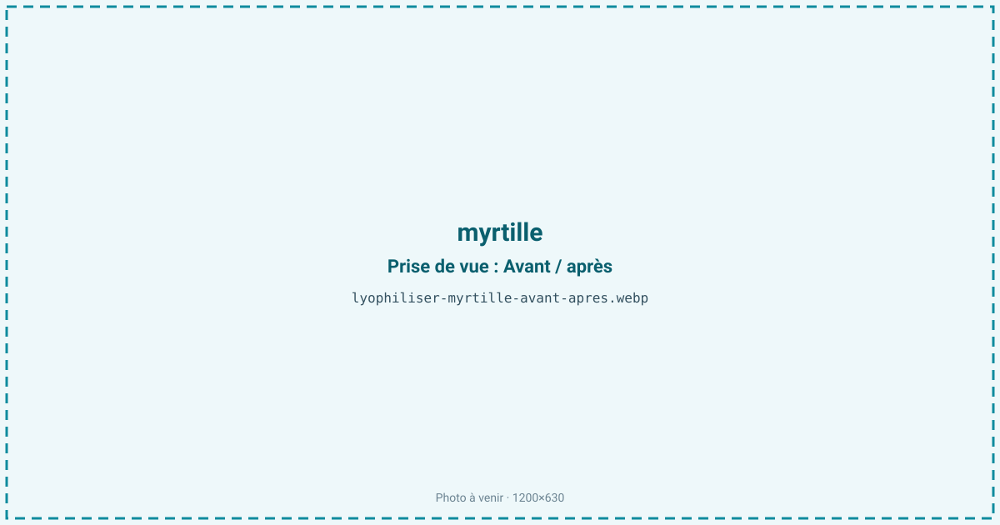
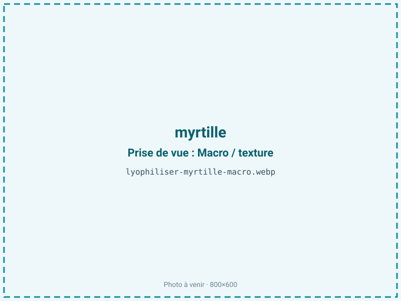
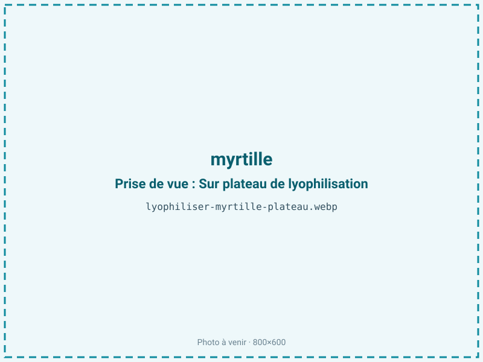
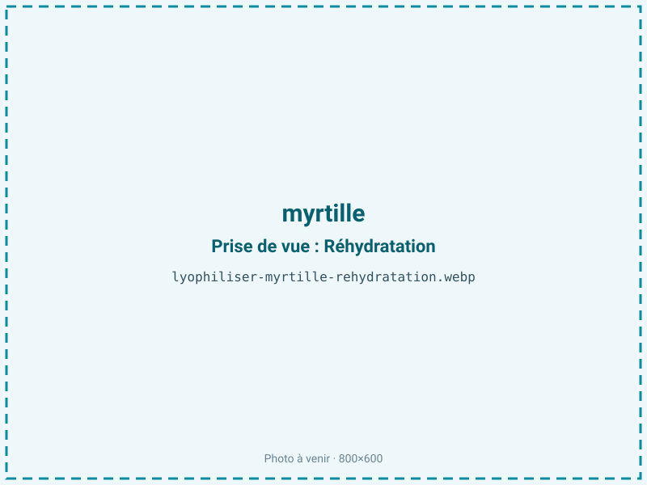

Lyophiliser des myrtilles
La myrtille est protégée par une peau cireuse qui la conserve un peu, mais la rend lente à sécher. Lyophilisée, elle devient un snack antioxydant léger qui préserve ses anthocyanes et sa couleur bleu-violet, à condition d'ouvrir sa peau imperméable pour laisser l'eau s'échapper.

En bref
Comment myrtille se comporte à la lyophilisation
La myrtille est enveloppée d'une cuticule cireuse, la pruine, quasi imperméable à la vapeur d'eau. C'est la clé de son comportement : une myrtille laissée entière et intacte sèche très mal, car l'eau intérieure ne trouve pas d'issue à travers la peau ; elle peut même ballonner sous vide. On l'incise, on la coupe en deux ou on la traite thermiquement pour fissurer la cire avant congélation.
Le fruit titre environ 84 % d'eau, avec des sucres élevés et des anthocyanes concentrées dans la peau, d'où sa couleur bleu-violet intense. À la congélation, l'eau cristallise dans la pulpe ; à la sublimation, le front ne progresse correctement que si la peau a été ouverte, sinon le cœur reste humide. Les sucres, à température de transition vitreuse basse, exposent au collapse si la rampe de séchage est trop rapide : le fruit se tasse au lieu de rester gonflé. La couleur, portée par les anthocyanes de la peau, est bien conservée à froid mais reste sensible à la lumière et à l'oxygène.
Paramètres de cycle
L'étape déterminante précède le séchage : inciser, couper en deux ou pré-traiter la peau pour rompre la barrière cireuse, faute de quoi le cycle s'allonge démesurément et le cœur reste humide. Congeler ensuite à −30 °C. En sublimation primaire, adopter une montée en température lente et une clayette modérée : les sucres de la myrtille collapseraient sous une rampe trop agressive, et le fruit se tasserait.
La myrtille étant maigre, sans lipides à protéger, on vise une aw basse de 0,20 à 0,30 : descendre est favorable à la stabilité et à la préservation des anthocyanes, sans le risque de rancissement des produits gras. Le critère d'arrêt vise un fruit cassant, sans zone souple, et un centre qui n'est plus caoutchouteux, signe fréquent d'une peau insuffisamment ouverte au départ.
Pièges connus
- Inciser ou pré-traiter la peau pour accélérer le séchage.
- Sucre élevé : éviter le collapse par séchage trop rapide.



Variantes & provenance
La distinction majeure oppose la myrtille sauvage, petite, à peau fine et très pigmentée, au bleuet de culture, plus gros, à peau épaisse et plus aqueux : le second demande un incisage plus systématique et un cycle plus long. Le calibre joue directement sur le séchage, une grosse baie garde plus facilement un cœur humide. La maturité influe sur le taux de sucre, donc sur le risque de collapse : une myrtille très mûre, plus sucrée, est plus délicate à sécher gonflée. Selon l'usage, on livre le fruit entier incisé ou en demi ; la demi expose la chair, sèche plus vite et donne une meilleure régularité.
Conservation & DLUO
La myrtille est un fruit maigre : son facteur limitant est la reprise d'humidité, puis la dégradation des anthocyanes sous l'effet de la lumière et de l'oxygène. Une aw basse lui est donc favorable, sans risque de rancissement contrairement aux produits gras. Une fois sèche, elle est hygroscopique et se ré-humidifie rapidement à l'air : elle ramollit et perd son croquant. Le conditionnement barrière, de préférence opaque pour protéger le bleu-violet, est essentiel, et il faut refermer vite après ouverture. En sachet barrière opaque, la myrtille se conserve 12 à 24 mois à température ambiante. La peau, restée en partie sur le fruit, protège légèrement la pulpe mais n'empêche pas la reprise d'humidité une fois la baie ouverte au séchage.
12 à 24 mois en sachet barrière.
Estimez selon votre emballage :
Face aux autres procédés de séchage
Au séchage à l'air, la peau cireuse aggrave le problème : la baie sèche en surface et garde un cœur humide, un croûtage classique, tout en s'affaissant. Au séchage à chaud, elle brunit, durcit et une part des anthocyanes se dégrade, on obtient un raisin sec de myrtille, dense et sombre. Le micro-ondes sous vide fait mieux sur la couleur mais peine à sécher régulièrement une baie à peau imperméable. La lyophilisation, sur des myrtilles incisées, donne un fruit aéré, bleu intense et croquant, avec des antioxydants préservés, d'où son emploi pour le snacking santé et la poudre colorante.
Marchés & applications
La myrtille lyophilisée vise le snacking santé et antioxydant, les mueslis, granolas et barres de céréales, la poudre colorante et aromatique naturelle, et l'alimentation infantile. Le fruit entier incisé sert d'inclusion pour le petit-déjeuner et la chocolaterie, la poudre pour les boissons et smoothies. Les clients types sont les marques de petit-déjeuner et de nutrition, les fabricants de compléments qui mettent en avant les anthocyanes, et les pâtissiers cherchant une couleur bleue naturelle stable.
- Snack antioxydant
- Muesli et barres
- Poudre colorante naturelle
Questions fréquentes — myrtille
Pourquoi faut-il inciser la myrtille avant de la lyophiliser ?
Parce que sa peau cireuse est quasi imperméable à la vapeur d'eau. Sans incision, l'eau ne s'échappe pas, le cœur reste humide et le cycle s'allonge énormément.
Myrtille sauvage ou bleuet de culture ?
Les deux se lyophilisent. La sauvage, petite et à peau fine, sèche plus vite et est plus pigmentée ; le bleuet, gros et à peau épaisse, demande un incisage plus systématique.
Garde-t-elle sa couleur bleue ?
Oui : le froid préserve les anthocyanes de la peau. La couleur reste intense, surtout en conditionnement opaque à l'abri de la lumière.
Quel est le ratio ?
Environ 8:1 : il faut à peu près 800 g de myrtilles pour 100 g de fruit lyophilisé, la baie titrant 84 % d'eau.
Pourquoi ma myrtille lyophilisée est-elle caoutchouteuse au centre ?
C'est le signe d'une peau insuffisamment ouverte : l'eau est restée piégée. Inciser ou couper en deux règle le problème.
Entière ou coupée en deux ?
La demi expose la chair, sèche plus vite et plus régulièrement ; l'entière incisée reste possible pour un fruit à l'aspect intact.
Combien de temps se conserve-t-elle ?
de 12 à 24 mois en sachet barrière opaque à température ambiante pour la myrtille. Après ouverture, refermer vite car elle reprend l'humidité.
Prochaine étape : envoyez-nous 200 g
Vous avez les repères de la myrtille. La suite logique : nous envoyer un échantillon et repartir avec une fiche technique sur votre produit — rendement, aw finale, coût au kilo.
Tester la myrtille — 250 à 500 €Déductible de votre premier lot.